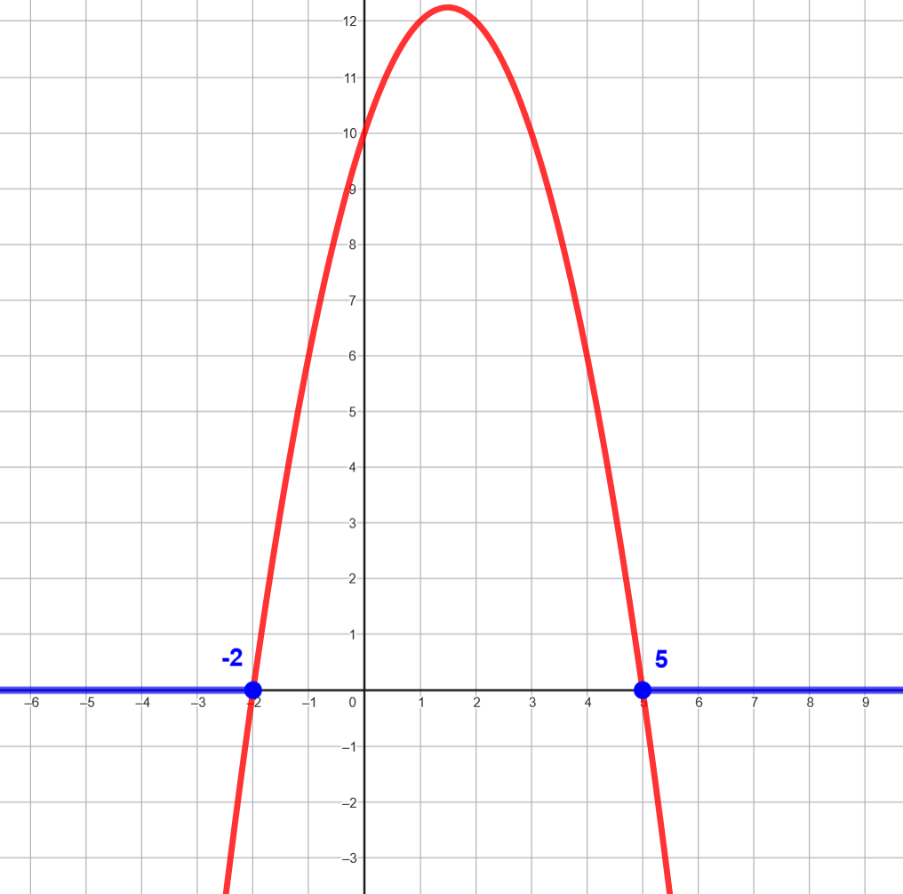
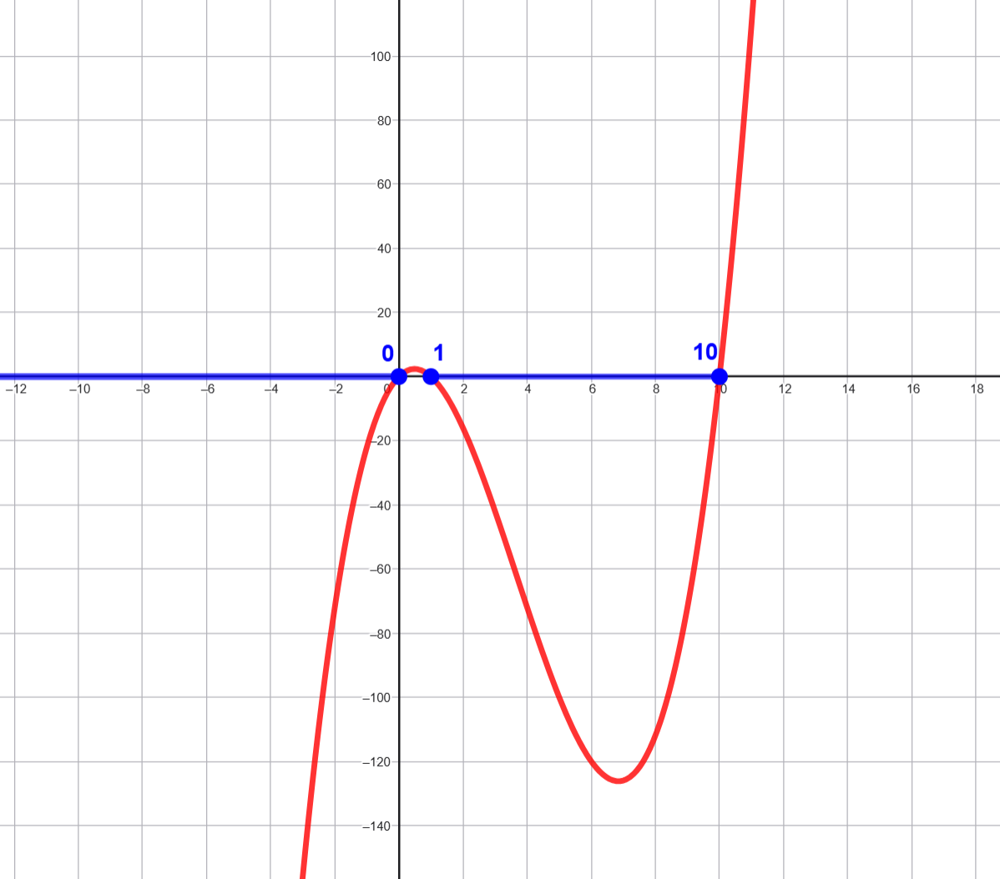
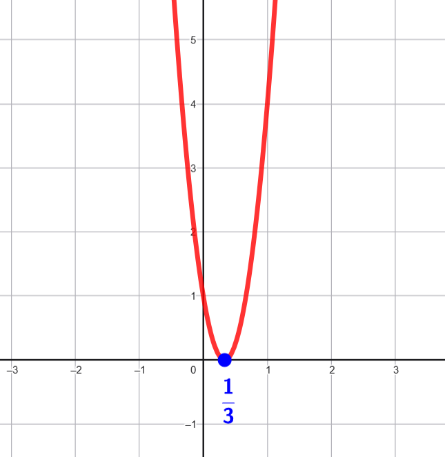
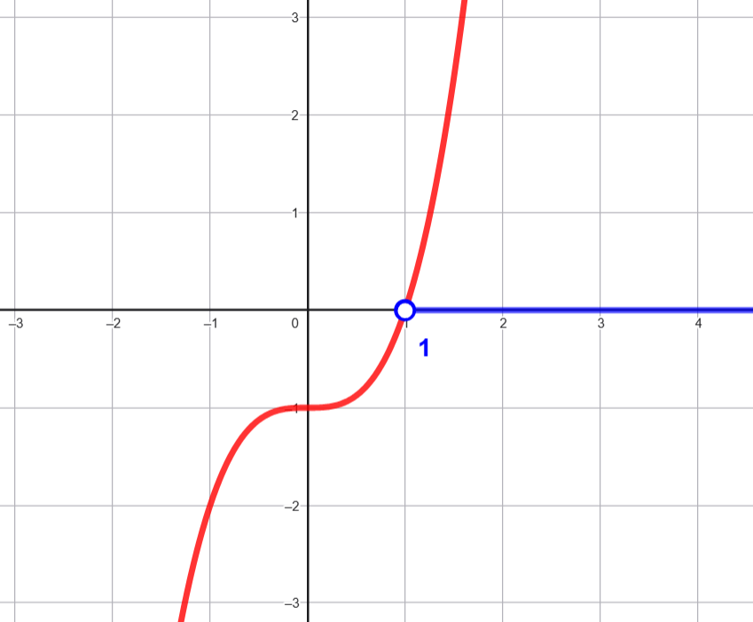
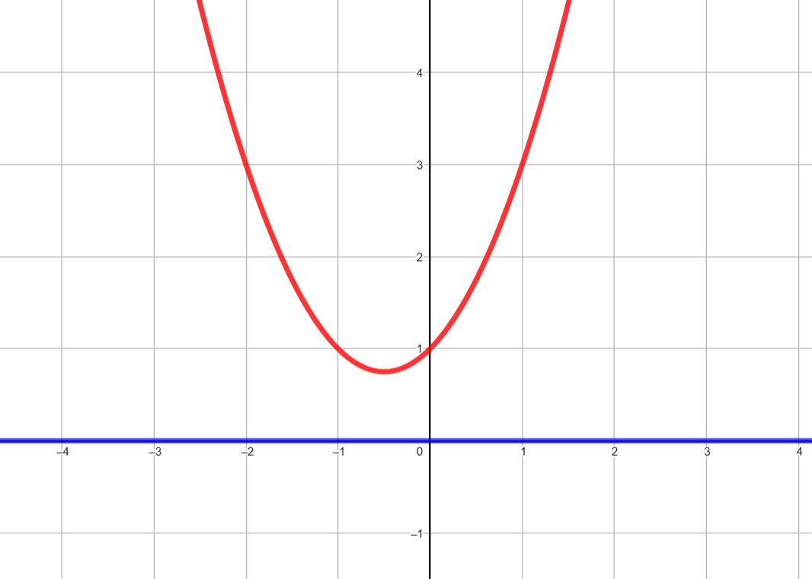
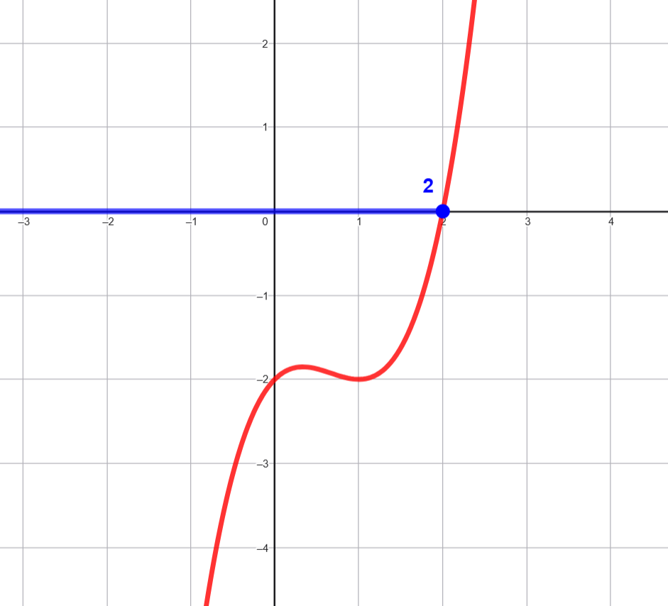

Resuelve las siguientes inecuaciones:
\(-x^2 + 3x + 10 \leq 0 \)
· Reescribimos: \(−x^2+3x+10 \leq 0\)
· Multiplicamos por -1 (cambiando el signo): \(x^2−3x−10\leq 0\)
· Factorizamos: \((x−5)(x+2) \geq 0\)
· Solución: \(x≤−2\) o \(x≥5\)
📊 Interpretación gráfica: La parábola abre hacia abajo. La solución incluye los extremos fuera de las raíces: desde \(−∞\) hasta \(−2\), y desde \(5\) hasta \(+∞\), con círculos cerrados en ambos puntos.

\(x^3 - 11x^2 + 10x \leq 0\)
· Factorizamos: \(x(x−1)(x−10)≤0\)
Primera posibilidad
\(
\left\{
\begin{array}{l}
x \leq 0 \\
\wedge \\
(x - 1)(x - 10) \geq 0
\end{array}
\right.
\Rightarrow
\left\{
\begin{array}{l}
x \leq 0 \\
\wedge \\\left\{
\begin{array}{l}
\left( x \leq 1 \wedge x \leq 10 \right) \\
\vee \\
\left( x \geq 1 \wedge x \geq 10 \right)\Rightarrow \text{Absurdo}\end{array}
\right.
\end{array}
\right)\Rightarrow x \in (-\infty, 0]
\)
Segunda posibilidad
\(
\left\{
\begin{array}{l}
x \geq 0 \\
\wedge \\
(x - 1)(x - 10) \leq 0
\end{array}
\right.
\Rightarrow
\left\{
\begin{array}{l}
x \geq 0 \\
\wedge \\\left\{
\begin{array}{l}
\left( x \geq 1 \wedge x \leq 10 \right) \\
\vee \\
\left( x \leq 1 \wedge x \geq 10 \right)
\Rightarrow \text{Absurdo}\end{array}
\right.
\end{array}
\right)\Rightarrow x \in [1, 10]
\)
Solución: \(x \in (-\infty, 0] \cup [1, 10] \)
📊 Interpretación gráfica: La curva cúbica cruza el eje en 0, 1 y 10. La solución incluye los tramos donde la función está por debajo o igual a cero.

\(9x^2 - 6x + 1 > 0\)
· Discriminante: \(\Delta=(−6)^2−4(9)(1)=36−36=0\)
· Raíz doble: \(x=\dfrac{1}{3}\)
· Como la parábola abre hacia arriba, está por encima de cero en todos los puntos excepto en \(x=\dfrac{1}{3}\)
Solución: \(x \in (-\infty, \dfrac{1}{3}) \cup (\dfrac{1}{3}, \infty)=\mathbb{R}-\left\{ \dfrac{1}{3} \right\} \)
📊 Interpretación gráfica: La parábola toca el eje en un solo punto. La solución excluye ese punto.

\(x^3 - 1 > 0\)
· Factorizamos: \((x−1)(x^2+x+1)>0\)
· El trinomio cuadrado siempre es positivo, así que la desigualdad depende de \(x−1>0\)
Solución: \(x−1>0 \Rightarrow x\in(1, +\infty)\)
📊 Interpretación gráfica: La curva cúbica cruza el eje en \(x=1\). La solución incluye todos los valores mayores a 1.

\(x^2 + x + 1 > 0\)
· Discriminante: \(\Delta=12−4(1)(1)=−3 →\) No hay raíces reales
· El trinomio siempre es positivo
Solución: \(x \in \mathbb{R}\)
📊 Interpretación gráfica: La parábola está completamente por encima del eje. La solución incluye todos los valores reales.

\(x^3 - 2x^2 + x - 2 \leq 0\)
· Factorizamos por grupos: \((x^2)(x−2)+(1)(x−2)=(x^2+1)(x−2)\)
- \(x^2 + 1 > 0\) siempre, así que la desigualdad depende de \(x - 2 \leq 0\)
Solución: \(x \leq 2 \Rightarrow x \in (-\infty,2]\)
📊 Interpretación gráfica: La curva cúbica está por debajo del eje hasta \(x=2\), donde se iguala a cero.
